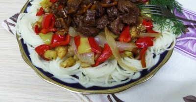

Лапша вок с говядиной и овощами

Ингредиенты
- Говядина - 500 гр
- Морковь - 1 шт
- Лук репчатый - 4 шт
- Баклажаны - 2 шт
- Кабачки - 1 шт
- Болгарский перец - 5 шт
- Растительное масло - 200 гр
- Соль - по вкусу
- Перец черный молотый - по вкусу
- Лапша - 500 гр
Рецепт приготовления
- Как сделать лапшу вок с говядиной и овощами? Подготовьте все необходимые ингредиенты. Подойдут абсолютно любые овощи на ваш вкус. Любое не жирное мясо. А так же лапша из любой муки. Рисовой, пшеничной, гречневой...
- Мясо промойте и порежьте небольшими кусочками.
- Болгарские перцы можно взять несколько разных сортов, красный, зеленый или желтый. Стручки очистите от семян, промойте и порежьте крупной соломкой или квадратиками примерно 2 х 2 см.
- Репчатый лук порежьте на широкие ломтики вдоль луковицы.
- Почистите морковь и порежьте тонкой соломкой.
- Очистите баклажаны и кабачки, порежьте кубиками примерно одинакового размера.
- В сковороду вок налейте растительное масло, достаточное лишь для поджаривания мяса и моркови. Масло разогрейте и положите мясо. Перемешайте, закройте крышкой и поставьте томиться в своем соку на медленном огне, пока не выпарится вся водичка.
- Пока мясо готовится, параллельно можно поджаривать овощи. В небольшом количестве растительного масла пассеруйте репчатый лук.
- Затем к луку добавьте нарезанный болгарский перец. и жарьте на небольшом огне, до размягчения овощей. Но не пережаривайте. Важно, чтобы овощи оставались целыми и не разварились.
- Затем поджаренные лук и перец откиньте на сито, чтобы ушло лишнее масло.
- Когда из мяса выпарится вода, его нужно поджарить до легкого покраснения. Затем добавьте морковку и, регулярно перемешивая, пожарьте еще минуты 3 - 4. Не забудьте по вкусу посолить.
- За пол минуты до конца приготовления мясной добавки, влейте немножко соевого соуса. Хорошо перемешайте и отключите огонь.
- Нарезанные кабачки поджарьте на среднем огне до золотистого цвета.
- Через сито сцедите лишнее масло.
- Баклажаны также слегка обжарьте на небольшом огне и, также откиньте на сито.
- В глубокую миску выложите все подготовленные овощи, по вкусу посолите и перемешайте.
- К готовой овощной массе добавьте черный молотый перец, соевый соус по вкусу и тщательно аккуратно перемешайте до однородной массы.
- Отварите лапшу и выложите в дуршлаг.
- Готовую лапшу разложите на широкое блюдо. Поверху равномерно распределите поджаренные овощи и мясо. Для более пикантного вкуса можно слегка оросить столовым или яблочным уксусом. Также к блюду можно добавить острый молотый или стручковый горький перчик. Блюдо получилось просто пальчики оближешь! Не стыдно подать гостям. Приятного всем аппетита!
Вернуться к списку блюд